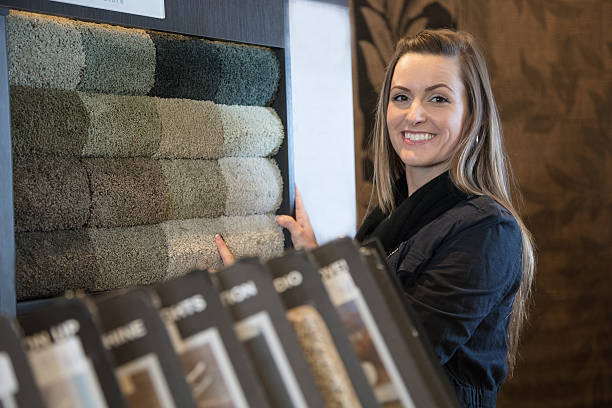
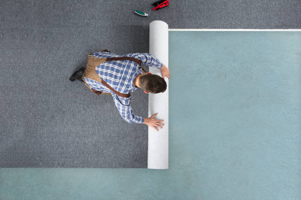

Whispering Pines North Carolina
info@topcarpetflooring.pro
Whispering Pines North Carolina
info@topcarpetflooring.pro

Upgrade your space with premium carpets and flooring in Whispering Pines North Carolina . We offer a variety of styles and colors, ensuring your home gets the perfect flooring solution.
Click Here To Call Us (877) 848-1711When it comes to upgrading your home or business, nothing transforms a space like high-quality carpet and flooring solutions. At Carpet and Flooring, we specialize in providing exceptional carpet and flooring services throughout Whispering Pines North Carolina . Whether you’re looking for plush carpets, durable hardwood flooring, or eco-friendly options, we have a wide selection to suit every style and budget.
Premium Carpet and Flooring Options in Whispering Pines North Carolina
We offer a variety of premium carpet and flooring choices, including luxurious carpets, hardwood floors, vinyl, laminate, and tile flooring. Our extensive collection features top brands and the latest trends, ensuring you get the best products for your space. Our team of experts in Whispering Pines North Carolina is committed to delivering personalized solutions tailored to your needs, whether you're remodeling a single room or outfitting your entire home or office.
Expert Installation and Exceptional Service
At Carpet and Flooring, we don’t just sell flooring—we provide expert installation services to ensure your floors are installed to perfection. Our experienced installers in Whispering Pines North Carolina use industry-leading techniques to deliver flawless results, every time. We pride ourselves on excellent customer service, offering professional advice and support throughout your entire flooring journey, from selection to installation and beyond.
Transform Your Space Today
Ready to elevate your home or office with beautiful, durable flooring? Contact Carpet and Flooring today to explore the best carpet and flooring options in Whispering Pines North Carolina . We guarantee satisfaction with every step, providing high-quality products and top-notch service at competitive prices.
Residential & commercial Carpet and Flooring
Quality services at affordable prices
Immediate 24/ 7 emergency services


At Premium Carpet and Flooring Services, we are committed to transforming your home or business with high-quality flooring solutions. Serving the vibrant city of Whispering Pines North Carolina we provide an extensive range of flooring options, from luxurious carpets to durable hardwood, laminate, and tile floors. Our expert team ensures that every installation is completed to perfection, offering seamless, professional results that enhance your space.
Whether you’re remodeling a single room or upgrading your entire property, our flooring specialists in Whispering Pines North Carolina guide you through every step of the process. We offer a wide variety of flooring styles and materials that suit all tastes and budgets. Our premium carpets provide comfort and elegance, while our range of hardwood and laminate flooring options brings a touch of sophistication and durability to your home or office.
Why choose Premium Carpet and Flooring Services? We pride ourselves on delivering exceptional customer service, fast turnaround times, and expert craftsmanship. Each of our flooring projects is backed by our satisfaction guarantee. We are committed to meeting your unique needs, providing you with flooring that not only looks stunning but also stands the test of time. Let us elevate your home or business in Whispering Pines North Carolina with our premium flooring solutions.
Contact us today to schedule your free consultation and discover why we’re the trusted flooring experts in Whispering Pines North Carolina .
Residential & commercial Carpet and Flooring
Quality services at affordable prices
Immediate 24/ 7 emergency services
Choosing the best carpet and flooring options for your home can be a daunting task. Our company prides itself on offering the highest quality selections available ensuring that you have a wide range of choices to suit every style and need. From plush carpets to luxurious hardwood and innovative vinyl options, we have the flooring you’ve been searching for.
Why Choose Us for the Best Flooring Options?
1. **Extensive Variety**: With a robust inventory of flooring products, you can find everything from timeless classics to modern trends in our showroom.
2. **Knowledgeable Staff**: Our team is trained to provide guidance on the best products based on your specific preferences, lifestyle, and budget.
3. **Expert Installation Services**: Quality products deserve quality installation. Our installation experts ensure that every floor is laid with precision and care.
4. **Long-lasting Quality**: Every product we offer is selected for its durability and quality, providing you with flooring solutions that last.
Discover the best carpet and flooring options with our expert team .

Laminate flooring is an excellent choice for those seeking a beautiful yet budget-friendly flooring option. With advancements in technology, laminate can now convincingly mimic the appearance of hardwood, stone, or tile while offering practicality and durability. Our laminate flooring installation services are designed to give your home a fresh new look without the hefty price tag.
Why Choose Us for Laminate Flooring Installation?
1. **Stylish Choices**: We carry a diverse range of laminate styles and finishes, allowing homeowners to find the perfect design for their space.
2. **Durability**: Laminate flooring is designed to withstand scratches, dents, and fading, making it ideal for high-traffic areas.
3. **Quick Installation**: Our experienced installers work efficiently to minimize disruption and provide a seamless flooring experience.
4. **Easy Maintenance**: With its resistance to stains and moisture, laminate flooring is easy to clean, making it a practical option for busy households.
Enhance your home’s beauty and functionality with laminate flooring installed by our skilled team in Whispering Pines North Carolina .

Laminate flooring is a fantastic alternative for those looking for style and functionality without the price tag of hardwood. Our laminate flooring installation services allow you to achieve the look of wood or tile while benefiting from easy maintenance and durability.
Our team is skilled in installing laminate flooring, ensuring an impeccable finish that can withstand the test of time. With a wide selection of colors and styles available, you can find a solution that fits your vision perfectly. When you choose us for your laminate flooring project, you're investing in beautiful and lasting floors that will enhance any room in your home or office.

Supporting local businesses is essential, and our company has been serving the Whispering Pines North Carolina community with pride. As one of the leading local carpet and flooring companies, we are dedicated to providing exceptional service and high-quality products tailored to our clients’ needs.
Choosing a local company means personalized service and expertise that larger chains cannot provide. Our knowledgeable staff will work closely with you to understand your requirements and help you find the perfect flooring option, whether for a residential or commercial project. With deep roots in the community, we are committed to maintaining our reputation by delivering outstanding results at competitive prices.
When it comes to flooring installation for homes, our dedicated team in Whispering Pines North Carolina has the experience and know-how to achieve stunning results. Every home is unique, and we tailor our services to suit your specific design vision and requirements.
Our process begins with a thorough consultation to understand your preferences, followed by expert guidance on material selection and design. We pride ourselves on our meticulous attention to detail during installation, ensuring that your new floors are not only beautiful but also installed correctly for long-lasting durability. When you choose us, you can rest assured that your housing project is in great hands.
The flooring design in an office space significantly contributes to its overall ambiance and functionality. Our office flooring installation services specialize in providing solutions that enhance productivity and aesthetic appeal within your work environment. We offer a wide range of commercial-quality flooring options, including carpets, tiles, and vinyl, that are specifically designed to withstand heavy foot traffic while maintaining their visual impact. Our team works towards minimizing disruption during installation, ensuring a seamless transition to your new office flooring without interfering with your business operations. Trust us to deliver a flooring solution that complements your company culture and lasts through the everyday wear and tear of a bustling office.

Updating your carpets can breathe new life into your home, but the process of removing old carpeting can be daunting. Our carpet removal and installation services in Whispering Pines North Carolina are designed to make this experience easy and stress-free. We handle everything from removing your old carpet to expertly installing the new one, ensuring a seamless transition.
Why Choose Us for Carpet Removal and Installation?
1. **Streamlined Process**: Our experienced team manages every step of the process, providing you with a hassle-free experience from start to finish.
2. **Efficient Removal**: We use specialized equipment and techniques to remove your old carpeting quickly and safely, minimizing mess and disruption.
3. **Professional Installation**: Our skilled installers ensure your new carpet is laid properly, enhancing both appearance and longevity.
4. **Customer-Centric Approach**: We are committed to your satisfaction, keeping you informed throughout the process and addressing any concerns you may have.
Experience the ease of carpet removal and installation with our expert services .

If you're considering upgrading your flooring, our carpet removal and installation services are designed to make the process as smooth as possible. Our team understands that removing old carpet can be a daunting task, but we handle it with care and efficiency, ensuring that your space is prepared for new flooring with minimal disruption. Following removal, our expert installations ensure that your new carpet is fitted to perfection, enhancing both comfort and style in your home or office. We prioritize customer satisfaction, offering a seamless transition from old to new while adhering to the highest standards of quality. Trust us to handle your carpet removal and installation with professionalism and expertise.
Years Experience
Expert Technicians
Satisfied Clients
Compleate Projects
At Top Carpet Flooring, we’re committed to delivering unmatched quality and service across all cities in Whispering Pines North Carolina . With years of experience, we understand the art of transforming your spaces with the perfect flooring solutions. Whether you're revamping a cozy home or upgrading a commercial space, we have you covered.
Our vast selection of premium carpets and flooring options ensures you’ll find something to match your style, budget, and needs. From plush carpets for living rooms to durable vinyl and hardwood floors for high-traffic areas, we offer solutions that combine elegance and practicality.
What sets us apart? Our professional team takes the time to understand your unique requirements, offering personalized recommendations to suit your preferences. We pride ourselves on using only top-quality materials, ensuring long-lasting results that add value to your property.
At Top Carpet Flooring, customer satisfaction is our priority. From the initial consultation to the final installation, we guarantee a seamless and hassle-free experience. Our trained installers work with precision and care, leaving your space looking flawless.
Serving all cities in Whispering Pines North Carolina we’re proud to be the trusted name for reliable, affordable, and beautiful flooring solutions. Join countless satisfied customers who’ve chosen us for our expertise, dedication, and exceptional craftsmanship.
Contact Top Carpet Flooring today to schedule a consultation and discover how we can transform your space with flooring that’s both stunning and functional. Your dream floors are just a call away!
When searching for Carpet and Flooring Near Me you might be overwhelmed by the variety of options. However, we stand out from the competition by offering a comprehensive range of floor covering solutions tailored to your specific needs. Our team of flooring experts is dedicated to providing top-notch service, selection, and installation. From cozy carpets to durable vinyl and elegant hardwood, we cater to all styles and budgets.
Why choose us? Our extensive experience in the flooring industry allows us to guide you through your choices. Our in-store experts are equipped with the knowledge to help you select the perfect flooring for your home or business. Moreover, we provide free consultations and measurements, ensuring that you make informed decisions without any hassle. With our commitment to customer satisfaction and quality products, we ensure that every installation is seamless and meets your expectations.
Transforming your home with beautiful, comfortable carpets is easy with our residential carpet installation services . Our professional team understands the importance of creating a cozy environment for your family, and we are here to help every step of the way. From selecting the right carpet to precise installation, we ensure that your experience is seamless. Our extensive range of carpets includes options that complement any home décor—whether modern, traditional, or eclectic. We use advanced installation techniques to ensure that your carpet not only looks fabulous but also stands up to the rigors of everyday life. Moreover, our team is trained to handle any unexpected challenges during the installation process, so you can trust us to deliver impeccable results that add value to your home.
Finding quality flooring that doesn’t break the bank can be a challenge. Thankfully, our company specializes in affordable carpet and flooring solutions that combine value and style. We believe that everyone deserves beautiful flooring, and we strive to provide options that meet various budget needs without compromising on quality.
Why Choose Us for Affordable Flooring?
1. **Competitive Pricing**: We continuously review our pricing strategies to ensure that you receive the best value for your investment without sacrificing quality.
2. **Diverse Options**: Our extensive catalogue includes various flooring styles—from budget-friendly carpets to durable vinyl—ensuring you find something that fits your aesthetic and financial requirements.
3. **Transparent Processes**: We believe in honesty and transparency. Our quotes are straightforward, with no hidden fees or surprise costs.
4. **Expert Installation**: Affordable doesn’t mean low quality. Our skilled installers ensure a precision fit and a flawless finish, enhancing the overall value of your flooring investment.
Let us help you discover the perfect flooring solution that complements your home or business while staying within your budget. Reach out to us for affordable carpet and flooring in Whispering Pines North Carolina .
Finding affordable carpet and flooring options doesn't mean you have to compromise on quality. Our mission is to provide high-quality flooring solutions that fit every budget. We believe that everyone deserves beautiful floors in their home or office, so we’ve partnered with reputable manufacturers to offer a wide range of value-oriented products without sacrificing durability and style. Our affordable options include plush carpets, stylish laminate flooring, and luxury vinyl planks, all competitively priced to suit your financial needs. Our sales consultants are ready to assist you in finding the best deals and options that align with your style, ensuring you get the best value for your investment.
Your home is your sanctuary, and every detail should reflect your personal style. Our custom flooring installation services are designed to fulfill that vision, allowing you to choose from a wide range of materials, colors, and textures tailored to your preferences. Whether you prefer the timeless beauty of hardwood or the innovative designs of luxury vinyl, our team is here to bring your ideas to life.
Reasons to Choose Us for Custom Flooring:
1. **Personalized Design Services**: Our design experts will work alongside you to create a cohesive look that complements your home’s aesthetic.
2. **High-Quality Materials**: We source our products from top manufacturers to provide you with the best quality flooring that stands the test of time.
3. **Seamless Coordination**: From initial consultation to installation, we ensure smooth communication and coordination at every stage of the process.
4. **Satisfaction-Focused**: Our job isn't done until you are completely happy with your new floors.
Transform your space with custom flooring solutions that are uniquely you. Contact us for expert custom flooring installation in Whispering Pines North Carolina .
No two spaces are the same, which is why we offer custom flooring installation . Our team understands that each project has unique requirements, and we are dedicated to providing tailored solutions that meet those needs.
From customized designs to unique installation techniques, we can help you achieve the perfect look for your home or commercial space. Our extensive knowledge of flooring products allows us to recommend the best options based on your style preferences and practical needs. With our expertise in custom flooring, we bring your vision to life, ensuring you are satisfied with the end result.
Hardwood flooring is a timeless choice that adds warmth and elegance to any space. Our hardwood flooring installation services are designed for homeowners who appreciate quality and style. With a variety of species, finishes, and engineered options, we offer something for every taste and budget.
Our skilled installers will handle the entire process with precision and care, ensuring a stunning finish that enhances the natural beauty of the wood. We focus not just on aesthetics but also on the durability and longevity of the floors we install. When you invest in hardwood flooring with us, you are choosing a timeless solution that will elevate your space for years to come.
Our carpet installation services are designed to provide a seamless experience from consultation to completion. With a large variety of carpet styles, colors, and textures available, you'll find the perfect match for your home or business.
We pride ourselves on professionalism, ensuring that every installation is done to the highest standards. Our experienced team evaluates each space to recommend the best carpet options based on traffic, style, and function. The care we take in our installation process guarantees a phenomenal result, and our long-standing reputation speaks to our commitment to customer satisfaction.
Is your flooring showing signs of wear and tear? Our flooring repair services are here to help restore your floors to their original glory. From scratches and dents in hardwood to stains and tears in carpet, our experienced team can repair a variety of flooring types effectively.
We understand that damaged flooring can affect the beauty and functionality of your space. That’s why we offer quick and affordable repair solutions to extend the lifespan of your floors. Our technicians utilize advanced repair methods, ensuring that the repair blends seamlessly with your existing flooring. Trust us to give your floors the care they deserve while minimizing costs and disruptions.
Vinyl flooring is an increasingly popular choice due to its versatility, durability, and low maintenance. Our vinyl flooring installation service in Whispering Pines North Carolina allows you to explore a wide array of designs, colors, and textures that can mimic natural materials like wood or stone.
Choosing vinyl means enjoying water resistance, making it perfect for kitchens, bathrooms, and high-traffic areas. Our skilled installation team ensures a flawless application that enhances the look and longevity of your vinyl floors. We prioritize customer satisfaction, tailoring our services to meet your specific needs while giving you beautiful flooring that is built to withstand the test of time.
When searching for a carpet and flooring store near me, our store stands out for its exceptional range of products and customer service. We are more than just a flooring store; we are your partners in creating beautiful spaces. Our well-curated selection includes everything from plush carpets to durable hardwood, luxury vinyl, and more. We understand that shopping for flooring can be overwhelming, so our experienced team is here to assist you in making informed decisions tailored to your specific needs, style, and budget. Plus, we offer competitive pricing and exclusive deals to ensure you get the best value. Visit us today and see why we’re the preferred flooring destination in Whispering Pines North Carolina .
Luxury vinyl plank flooring is the perfect fusion of elegance and durability, making it a great choice for any space. Our luxury vinyl plank flooring installation service in Whispering Pines North Carolina offers homeowners and businesses a stunning flooring option that can withstand the demands of high-traffic areas while maintaining an upscale appearance. With designs that mimic natural wood and stone, our luxury vinyl products offer exceptional realism and beauty. Our skilled installation team ensures that your flooring is fitted perfectly, providing a seamless finish that enhances the overall look of your interior. Plus, luxury vinyl plank is easy to maintain and resistant to moisture, making it an ideal choice for kitchens, bathrooms, and living areas alike.
When it comes to versatility and style, carpet and tile installation provides an option for every space. We specialize in the seamless integration of carpet and tile, allowing you to create unique designs that enhance both comfort and function in your home or commercial property.
Our expert team is proficient in working with a variety of tile materials, including porcelain, ceramic, and natural stone, ensuring the ideal pairing with your carpet selections. Whether you're looking to customize your flooring in a home, office, or retail space, we have the skills and knowledge to create a design that exceeds your expectations.
If your floors are showing signs of wear and tear or simply aren’t meeting your needs anymore, our flooring replacement services in Whispering Pines North Carolina are here to help. We work closely with our clients to determine the best options for replacement, catering to styles, budgets, and functionality.
Our team will guide you through the selection process, where you'll discover an array of flooring materials, including carpet, hardwood, laminate, and vinyl. Upon choosing your new flooring, our professional installers will ensure the project is handled efficiently and effectively, leaving you with a refreshed space that you can feel proud of.
Environmentally conscious living is more important than ever, and our selection of eco-friendly flooring options in Whispering Pines North Carolina reflects that commitment. We provide sustainable products made from renewable resources, ensuring that your flooring choice is both stylish and responsible.
From bamboo to recycled materials, our team helps you navigate the selection of eco-friendly options that fit your lifestyle while reducing your carbon footprint. Choosing us means prioritizing sustainability without sacrificing quality or aesthetics, making us your trusted partner for all eco-friendly flooring solutions.
Waterproof flooring is a smart choice for areas prone to moisture, such as kitchens, bathrooms, and basements. Our waterproof flooring options combine style with practical protection against water damage. With our waterproof flooring installation services, you can enjoy the look of hardwood, tile, or luxury vinyl while ensuring your floors are safe from spills and moisture.
Why Choose Us for Waterproof Flooring Installation?
1. **Diverse Selection**: We offer a variety of waterproof flooring styles, ensuring that you find the perfect match for your home's interior.
2. **Durability**: Our waterproof options are designed to withstand high humidity and accidental spills, making them ideal for busy households.
3. **Expert Installation**: Our experienced team ensures accurate and efficient installation to maximize the effectiveness of your waterproof flooring.
4. **Maintenance Support**: We provide guidance on caring for your new floors, helping you maintain their appearance and durability.
Protect your home with our reliable waterproof flooring installation services .
Water-resistant flooring is essential for high-moisture areas such as kitchens and bathrooms. Our waterproof flooring installation services in Whispering Pines North Carolina offer a variety of options ideal for surviving spills and stains without compromising on style.
Our products come in various materials, including vinyl and laminate, allowing you to enjoy beautiful floors that withstand water exposure. Our professional installation ensures a perfect fit that enhances durability while providing you peace of mind in your busy household. Trust us to deliver quality waterproof solutions catered specifically to your needs.
Looking to enhance the beauty and comfort of your home or business? Our expert carpet installation and flooring solutions in Whispering Pines North Carolina provide the perfect upgrade to any space. Whether you're renovating your living room, office, or entire property, our high-quality flooring options are designed to meet your needs and exceed your expectations.
At Carpet and Flooring, we offer a wide variety of flooring choices, including plush carpets, elegant hardwood, durable laminate, and modern tile. Our professional team ensures a seamless installation process, delivering precise craftsmanship and attention to detail. With years of experience in the industry, we understand the unique needs of Whispering Pines North Carolina residents and businesses, providing customized solutions that perfectly complement your space and lifestyle.
Our team uses the latest techniques and premium materials to guarantee long-lasting results, whether you're upgrading for comfort, style, or practicality. We prioritize your satisfaction, ensuring timely installations with minimal disruption to your routine.
Ready to transform your space with exceptional carpet installation and flooring services in Whispering Pines North Carolina ? Contact us today for a free consultation and let our experts guide you in choosing the best flooring solution for your property. Experience the difference of professional flooring services that elevate your space and add lasting value.
Whispering Pines is a village in Moore County, North Carolina, United States. The population was 2,928 at the 2010 census.
Yes, Top Carpet Flooring provides flexible financing options to make your dream flooring more affordable .
Pet-friendly options like laminate and waterproof vinyl are ideal, and Top Carpet Flooring offers a variety of these durable choices .
Vinyl flooring is an excellent choice for kitchens in Whispering Pines North Carolina as it is water-resistant, durable, and easy to maintain.
With top-quality products, expert installation, and exceptional customer service, Top Carpet Flooring is the trusted choice .
Yes, Top Carpet Flooring provides warranties on many of our flooring products for added peace of mind .
Absolutely! Top Carpet Flooring offers a range of eco-friendly flooring options, including sustainable materials and low-VOC products .
Yes, our team at Top Carpet Flooring specializes in carpet repairs to restore your flooring's beauty and functionality in Whispering Pines North Carolina .
Same-day installation may be available depending on the project size and material; contact Top Carpet Flooring in Whispering Pines North Carolina for details.
Yes, we provide free estimates to help you plan your carpet and flooring projects in Whispering Pines North Carolina with confidence.
Yes, you can easily schedule a consultation with our team at Top Carpet Flooring in Whispering Pines North Carolina to discuss your project.
Yes, Top Carpet Flooring specializes in stair carpet installation, enhancing safety and aesthetics in your Whispering Pines North Carolina property.
Yes, we offer moisture-resistant flooring options like vinyl and tile, perfect for basements .
Carpet installation costs vary based on the material and project size. Contact Top Carpet Flooring for a detailed quote.
Regular sweeping, gentle cleaning solutions, and avoiding excess water help maintain hardwood floors from Top Carpet Flooring .
Our experts at Top Carpet Flooring can help you choose the perfect flooring by considering factors like durability, style, and budget.
Our design experts at Top Carpet Flooring can help you choose flooring that complements your home’s decor .
At Top Carpet Flooring, we offer a wide variety of options, including plush carpets, hardwood, laminate, vinyl, and tile flooring, ensuring the perfect match for your style and needs .
Yes, Top Carpet Flooring provides flooring samples to help you make an informed choice for your Whispering Pines North Carolina home or office.
Laminate flooring is cost-effective, durable, and available in a wide range of designs, making it a popular choice .
Yes, we offer removal services to prepare your space for new flooring in Whispering Pines North Carolina .
With proper care, hardwood flooring from Top Carpet Flooring can last for decades, adding beauty and value to your Whispering Pines North Carolina home.
Regular vacuuming, professional cleaning, and immediate stain treatment are essential for maintaining your carpet from Top Carpet Flooring in Whispering Pines North Carolina .
Yes, Top Carpet Flooring offers professional carpet installation services ensuring a flawless fit for your home or business.
Yes, Top Carpet Flooring is experienced in installing flooring in multi-story homes across Whispering Pines North Carolina .
Yes, we prioritize safety and offer low-VOC and hypoallergenic flooring options for families in Whispering Pines North Carolina .
Absolutely! Top Carpet Flooring offers waterproof flooring, perfect for areas like bathrooms and basements .
The installation time depends on the project's size and complexity, but our team at Top Carpet Flooring ensures timely and efficient service .
Durable options like vinyl, tile, and engineered hardwood are ideal for high-traffic areas, and we provide these at Top Carpet Flooring .
Hardwood flooring offers durability, timeless appeal, and added home value. Top Carpet Flooring provides top-quality hardwood options in Whispering Pines North Carolina .
Yes, Top Carpet Flooring provides commercial flooring solutions tailored to businesses of all sizes .
Top Carpet Flooring in Whispering Pines North Carolina is the best! Their experts helped me choose durable, beautiful vinyl flooring for my kitchen. The installation crew was professional, and the results are flawless. If you need new flooring, this is the company to call.
Profession
I recently upgraded my living room carpet with Top Carpet Flooring in Whispering Pines North Carolina . Their team was so helpful in choosing the best style and color. The installation process was seamless, and my room looks stunning. Great service and affordable prices!
Profession
I’ve worked with several flooring companies in Whispering Pines North Carolina but Top Carpet Flooring stands out. Their attention to detail and commitment to quality are unmatched. My new floors look fantastic, and I’ll be returning for future projects!
Profession
Whispering Pines NC Carpet and Flooring Pros
(877) 848-1711
info@topcarpetflooring.pro
09.00 AM - 09.00 PM
09.00 AM - 12.00 PM